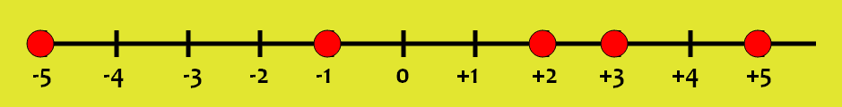

Comparación de numeros.
¿Que significa comparar números?
Signos de comparaciónHacer una comparación de números enteros significa conocer cuál de esos números es mayor (o menor que el otro). Una forma de saberlo es haciendo la representación gráfica de esos números enteros sobre la recta. Los números situados más hacia la derecha en la recta siempre son mayores que los situados a su izquierda.

Para hacer comparaciones entre números enteros necesitamos utilizar los signos ‘mayor que’ (>), ‘menor que’ (<) o ‘igual que’ (=).
- Para expresar que un número entero ‘a’ es mayor que otro número entero ‘b’, se escribe a>b
- Para expresar que un número entero ‘a’ es menor que otro número entero ‘b’, se escribe a<b
- Para expresar que un número entero ‘a’ es igual que otro número entero ‘b’ se escribe a=b
Por ejemplo:

-5<-1 -1<+2 +3<+5 -1>-5 +2>-1 +5>+3 +3=+3
Dados dos números enteros positivos, es mayor el que tiene mayor valor absoluto.
De los números enteros negativos, es mayor el que tiene menorvalor absoluto.
Todo número entero positivo es mayor que cualquier número entero negativo.
El cero es mayor que cualquier número entero negativo y menor que cualquier número entero positivo.
Videos para reforzar lo aprendido
Cuestionario para reforzar lo aprendido